Data Destruction
Like You've
Never Seen
Security At Our Core
ZER0trace, based in Emeryville, CA, was established through a partnership of technical experts and business owners from successful Bay Area and Pacific Northwest IT Infrastructure and Asset Disposition companies. Together, the ZER0trace team boasts well over 30 years direct experience with data destruction, IT infrastructure and asset management. We’ve put that experience to work and developed an industry leading operations model that is 100% secure, compliant with all regulations, standards, and the industries best practices.
ZER0trace is a NAID member and we’re actively pursuing AAA certification with the electronic disposition endorsement. We operate state-of-the-art sanitization and destruction systems, both mobile and plant-based, to serve our customers on the West Coast. Additionally, we maintain close strategic partnerships with peer data destruction vendors throughout the U.S and internationally to provide a single point of contact to transparently manage all of your destruction needs regardless of location. We have a demonstrable record of success with projects ranging in size from a few drives up to entire data center decommissions.
Our Methodology
ZER0trace utilizes the National Institute of Standards and Technology (NIST) Special Publication 800- 88, Revision 1, Guidelines for Media Sanitization as the primary framework for our service offering. NIST developed the guideline in accordance with its statutory responsibilities under the Federal Information Security Management Act of 2002 (FISMA), 44 U.S.C. § 3541 et seq., Public Law 107-347. NIST is responsible for developing information security standards and guidelines for use by the private industry as well as the public sector, including minimum requirements for Federal information systems, but does not apply to national security systems.
